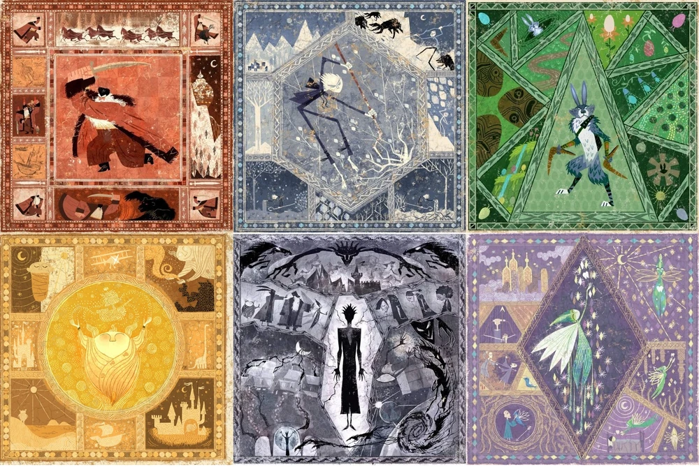

CONTAINS SPOILERS FOR RISE OF THE GUARDIANS (2012)
I have no idea what happens in the books! No art is mine!


 |
For years, the Bird in the Sun watched the humans on the planet they themselves called Earth. No other planets that surrounded the Earth had seen the birth of such peculiar...beings; not even the closest galaxies had seen their microbeings develop so quickly. Yes, indeed, it was a joy to watch Earth from his place in the center star. |
 |
A troublesome thought plagued the Bird pretty quickly. It seemed to him that those unable to see him during the night were frightened. They'd quake in fear and ponder why the Sun disappeared. They did not understand that the Sun was always there, standing over them silently hidden. And so, he thought long and hard, and placed a Man on the Moon. This Man had been chosen for his awe of the night sky. He gazed up at the stars with boundless wonder. Therefore, he would - the Bird hoped - share his love of the galaxy with his fellow humans down below. |
 |
The Man on the Moon had many names. And, unlike his companions down on Earth, he unfortunately had no memories to rely on. All that dwelled within him, even now thousands of years later, was the faint awe at the cosmos around him. An ever expanding universe, with stars and exoplanets as far as the eye could see, and he was trapped, alone, stuck orbiting around Earth yet never able to reach it. What else could that be considered, other than a punishment. The Moon - for he felt less man every passing century - was unsure if another being had done this to him, the same way he chose his companions. His “companions”, because if he would be forced to dwell on this plane for years to come, he refused to do it alone. Whatever had put him there, it had given him the power to choose others, and he intended to use it freely. The Moon viewed the Earth from his place in Copernicus’ crater. His light worked to give some comfort, but others still slept with fear gripping their hearts. As he stared, bored, a man, with a wife and a daughter, bid both the sweetest goodnights, fell into bed and never woke again. The Moon peered over and gleamed with interest as a dead man rose, invisible and alone. Watching this shadow beg his fake gods, grieve his grieving family and wander aimlessly amongst the living, the Moon felt the stir of cruelty in his chest. Unexplainably, he knew he had done this to the man. And he did not care. |